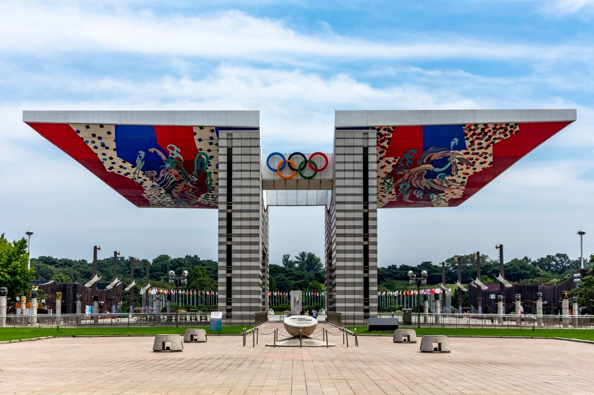

TOURIST in TOUR
상품투어 / 프로그램 소개
-
경복궁
2020.06 ~ 2020.12
조선시대에 만들어진 다섯 개의 궁궐 중 첫 번째로 만들어진 곳으로, 조선 왕조의 법궁이다. 한양을 도읍으로 정한 후 종묘, 성곽과 사대문, 궁궐 등을 짓기 시작하는데 1394년 공사를 시작해 이듬해인 1395년에 경복궁을 완성한다. ‘큰 복을 누리라’는 뜻을 가진 ‘경복(景福)’이라는 이름은 정도전이 지은 것이다.
-

N서울타워
2020.06 ~ 2020.12
서울시 용산구 남산공원길에 있는 전망타워와 문화·상업 복합시설을 통칭한다. 전망대·송신탑 부분인 N서울타워와 문화·상업 시설 부분인 서울타워플라자로 구성되는데, 등록된 정식 명칭은 'YTN서울타워'이며 남산타워 또는 서울타워라고 약칭하기도 한다. 타워의 총 높이는 탑신 135.7m와 철탑 101m를 합하여 236.7m이며, 남산의 해발고도 243m를 합하면 타워 정상의 해발고도는 479.7m에 달한다.
-
롯데월드
2020.06 ~ 2020.12
롯데그룹이 국민들의 여가 선용과 외국인 관광객 유치를 위해 설립하고 운영하고 있는 테마파크이다. 롯데월드는 모험과 신비를 주제로 한 실내 주제공원인 롯데월드 어드벤처, 호수공원인 매직아일랜드, 쇼핑몰, 민속박물관, 아이스링크, 호텔, 백화점 등으로 구성되어 관광, 레저, 쇼핑, 문화를 한곳에서 해결할 수 있는 대단위 복합생활공간이다.
-
창덕궁
2020.06 ~ 2020.12
창덕궁(昌德宮)은 대한민국 서울특별시에 있는 조선 시대 궁궐로 동쪽으로 창경궁과 맞닿아 있다. 경복궁의 동쪽에 있어서 조선 시대에는 창경궁과 더불어 동궐(東闕)이라 불렀다.창덕궁은 비교적 원형이 잘 보존되어 있는 중요한 고궁이며, 특히 창덕궁 후원은 한국의 유일한 궁궐후원이라는 점과 한국의 정원을 대표한다는 점에서 그 가치가 높다.1997년에 유네스코가 지정한 세계문화유산으로 등록되었다.
-

청계천
2020.06 ~ 2020.12
청계천(淸溪川)은 대한민국 서울특별시 내부에 있는 지방하천으로, 한강 수계에 속하며 중랑천의 지류이다. 최장 발원지는 종로구 청운동에 위치한 ‘백운동 계곡’이며,남으로 흐르다가 청계광장 부근의 지하에서 삼청동천을 합치며 몸집을 키운다. 이곳에서 방향을 동쪽으로 틀어 서울의 전통적인 도심지를 가로지르다가, 한양대학교 서울캠퍼스 옆에서 중랑천으로 흘러든다.
-
동대문 디자인 플라자
2020.06 ~ 2020.12
동대문디자인플라자의 앞마당 격인 어울림광장은 24시간 개방되는 복합 편집매장인 디자인장터(design market)와 종합안내실, 유구(遺構) 전시장으로 구성되어 있다. 동대문역사문화공원은 동대문역사관, 동대문운동장기념관, 한양도성 성곽, 디자인 전용 전시 공간인 갤러리문, 이간수전시장, 예술 프로그램 공간인 이간수마당 등으로 이루어져 있다. 이밖에 주차장과 의무실, 여성휴게실, 수유실, 물품보관소와 카페 공간 등 다양한 편의시설이 갖추어져 있다. 서울시에서 설립한 서울디자인재단에서 관리, 운영한다.
-
숭례문
2020.06 ~ 2020.12
숭례문(崇禮門)은 조선의 수도였던 한양의 4대문(大門) 중의 하나로 남쪽의 대문이다. 흔히 남대문(南大門)이라고도 부르는데, 이는 일제 강점기 시절에 일본이 붙인 명칭이 아니라 조선 초기부터 불린 이름이다.서울 4대문 및 보신각(普信閣)의 이름은 오행사상을 따라 지어졌는데, 이런 명칭은 인(仁: 동), 의(義: 서), 례(禮: 남), 지(智: 북), 신(信: 중앙)의 5덕(五德)을 표현한 것이었으며, 숭례문의 '례'는 여기서 유래한 것이다.숭례문의 편액은 《지봉유설》에 따르면 양녕대군이 썼다고 알려져 있으나 이설이 많다. 1396년(태조 5년)에 최유경이 축성하였다.447년(세종 29년)과 1479년(성종 10년) 고쳐 지었다.
-
국립민속박물관
2020.06 ~ 2020.12
국립민속박물관은 민속 자료를 연구, 보존하기 위해 설립된 대한민국의 대표적인 생활사 박물관이다. 1945년 11월 8일 한국 민속학의 선구자인 송석하의 수장품을 기증받아 서울시 중구 예장동에 개관한 국립 민족 박물관이 그 시초이다. 6·25 전쟁으로 동관이 폐관된 후 문화재관리국은 1966년경복궁 수정전에 소규모의 한국 민속관을 개설하였다.
-
전쟁기념관
2020.06 ~ 2020.12
호국 자료의 수집·보존·전시, 전쟁의 교훈과 호국정신 배양, 선열들의 호국 위훈 추모를 목적으로 1990년 9월 착공해 1993년 12월 완공하고, 1994년 6월 10일 개관한 기념관이다. 연건평 2만 5천 평에 지하 2층, 지상 4층 규모이며, 호국추모실·전쟁역사실·한국전쟁실·해외파병실·국군발전실·대형장비실 등 6개 전시실로 구분되어 있다.
-

올림픽공원
2020.06 ~ 2020.12
몽촌토성의 발굴과 올림픽 보조경기장의 건설로 세워진 시민공원으로 역사유적을 함께 돌아볼 수 있는 공원이다. 전통 한옥의 날렵한 처마선을 연상시키는 평화의 문을 지나 마주하는 호수는 몽촌토성 주변의 해자를 응용한 물의 정원으로 30m로 솟아오르는 음악분수와 올림픽을 기념하는 깃발로 치장하여 아름다운 사진을 남기는 경관으로 유명하다. 대형 야외 설치미술이 각기 나름의 개성을 가지고 자리한다. 전체 204개의 작품들은 세계 5대 규모의 야외조각공원을 구성하는 세계적 예술가들의 작품이다.
-
국립현대미술관
2020.06 ~ 2020.12
한국 근·현대 미술작품을 체계적으로 수집, 보존 및 전시하고 국제 미술교류를 통하여 현대미술발전에 기여할 목적으로 설립되었다. 1969년 10월 20일 경복궁(현 국립민속박물관)에 개관하였으며, 1973년 덕수궁으로 옮겼다가(덕수궁 현대미술관), 1986년 8월 현재의 위치로 이전했다. 1998년 12월 덕수궁에 미술관(분관)을 개관했으며 2013년 11월에 과거 국군기무사령부가 사용하던 종로구 소격동 부지에 서울관(분관)을 신축 개관했다. 2018년 청주관 개관으로 4관 체계를 만들었다.
-
청와대
2020.06 ~ 2020.12
청와대는 대통령의 집무실·접견실·회의실 및 주거실 등이 있는 본관과 비서실·경호실·춘추관·영빈관 등 부속건물로 되어 있고 넓은 정원과 북악산(北岳山)으로 이어지는 후원(後園) 및 연못이 있다. 본관은 2층 화강암 석조에 청기와[靑瓦]를 덮어 ‘청와대’란 명칭은 여기서 유래한 것이다.